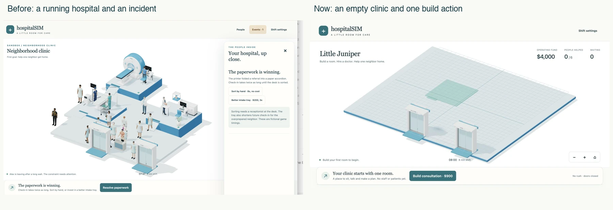

Little Juniper is the RC4 opening: no rooms, no staff, a $4,000 fictional opening fund. Build a consultation, then hire its doctor. The clock and expenses wait until you open.

The player builds the first room and hires Mira through the actual browser controls. Mira enters through the door, walks to work, helps Maya, and Maya leaves through the exit at game second 40. At second 60: 3 arrivals = 1 completed + 0 departed + 2 unfinished.
This is an actual canvas recording at 1×. HTML button panels are summarized in state captions rather than filmed. It has no audio. The recorded decisions and tracked visit replay exactly against the source model.
After helping one neighbor, choose an upgrade, a second room with its own doctor, or waiting seats. A faster room shortens active service. A second staffed room allows two simultaneous visits. Seats change where people wait, without making the doctor faster. New services and nine-role staffing are kept in the separate advanced scenarios.
| Seed 431, first chapter | Home | Departed | Still here |
|---|---|---|---|
| One room and one doctor | 15 | 6 | 12 |
| Add a room and doctor at first completion | 29 | 0 | 4 |
Existing hospitals remain available in Shift settings → Previous hospitals. Starting empty archives the current hospital before replacing it; storage errors stop replacement. Records stay on the device. Existing REPLISOME files and the full-hospital scenarios are preserved.
The opening, archive, real recording replay, routing, capacity, pickup, animation, save/load and continuing-shift checks pass. Actual desktop and 390×844 browser checks cover build, hire, completion, upgrade, a second staffed room, reduced motion and settings pause behavior. A desktop narrow viewport is not a physical iPhone benchmark or an accessibility audit.
The first chapter is consultation-only. It does not yet grow seamlessly into the advanced imaging/procedure scenarios. The new foundation is browser geometry using the existing modeling helper; the equipment and people reuse the original Blender assets. No new Blender execution is claimed for this change.
This remains a substantially AI-assisted engineering prototype. Human animation, anatomy and prop interaction still fall below the supplied visualization reference. Enjoyment, replay interest and educational usefulness require real evaluation; none is claimed as established.